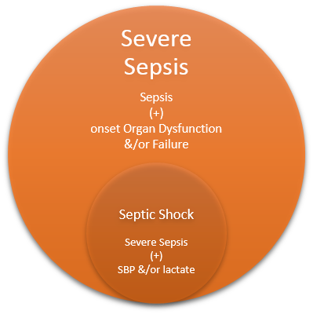
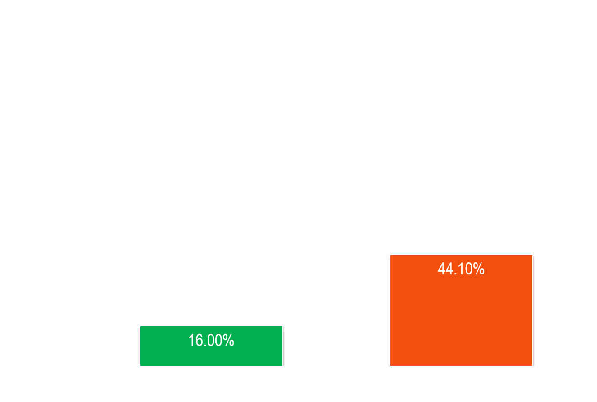
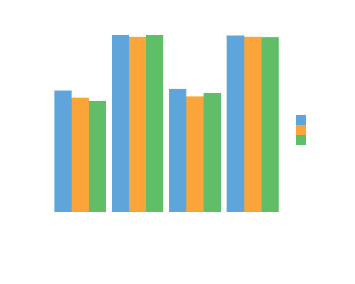
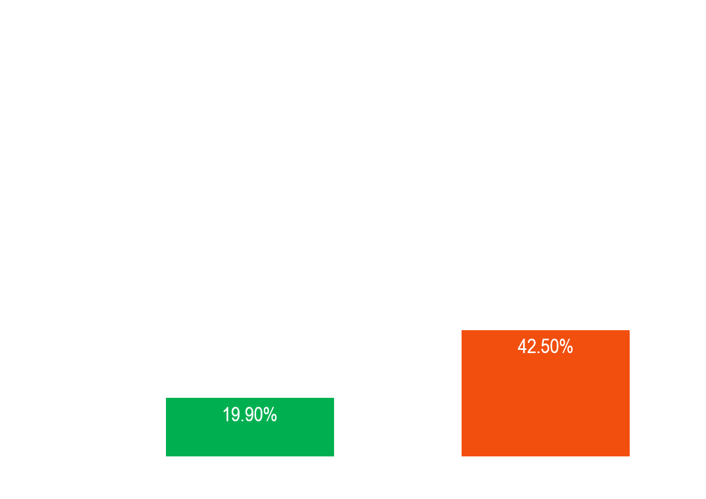

Predictive Models for Severe Sepsis in Adult ICU Patients
Joseph Guillén, Jiankun Liu, Margaret Furr, Tianyao Wang
Agenda
- Overview of severe sepsis
- Problem and objectives
- Models and results
- Conclusions and future research
Severe Sepsis
- Defined as “systemic inflammatory response to infection complicated by acute organ dysfunction” (NEJM 369:840-851)
- High incidence in the hospital and intensive care unit
- High mortality rate
- Patient outcomes dramatically improved by early intervention
Objectives
- Build predictive models for severe sepsis based on laboratory values and vital signs
- For patients with severe sepsis, build predictive models for lactate clearance
Systemic Inflammatory
Response Syndrome (SIRS)
(≥2 of the following)
Temperature >38oC or <36oC
Pulse, >90/min
Respirations, >20/min
White cells, >12,000
or <4000/mm3 or >10%
band forms
Infection
Suspected or Proven
Sepsis
SIRS + Infection

N Engl J Med 2002;
Sep 347:966-967
N Engl J Med 2002;
Sep 347:966-967
N Engl J Med 2002;
Sep 347:966-967
Intervention
- Early time to antimicrobial therapy
- Early fluid resuscitation
- Vital and maximizing outcomes
CCM 2006:34:1589-96
Data

Performance




Lactate Clearance Models
Lactate Clearance
- Strongly associated with improved outcomes
- Delayed clearance indicative of organ dysfunction or continual shock
- More aggressive resuscitation for patients with high risk of delayed clearance
